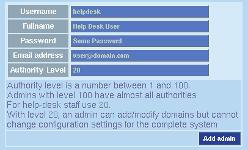

| Adding an administrator | ||
| To add an administrator, you must have an authority level of 100. If this is a new installation, you'll have to be logged in as ispman. | ||
| To add an Administrator:
 Administrator Authority Levels
| 0 to 69 - Add Resellers, Clients, Domains, Mailboxes 70 to 99 - The above, plus delete domains 100 - The above, Add administrators, manage configuration
Return to Configuring ISPMan
| |